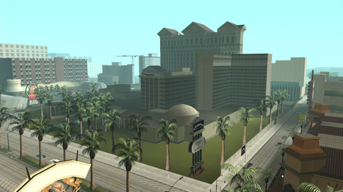
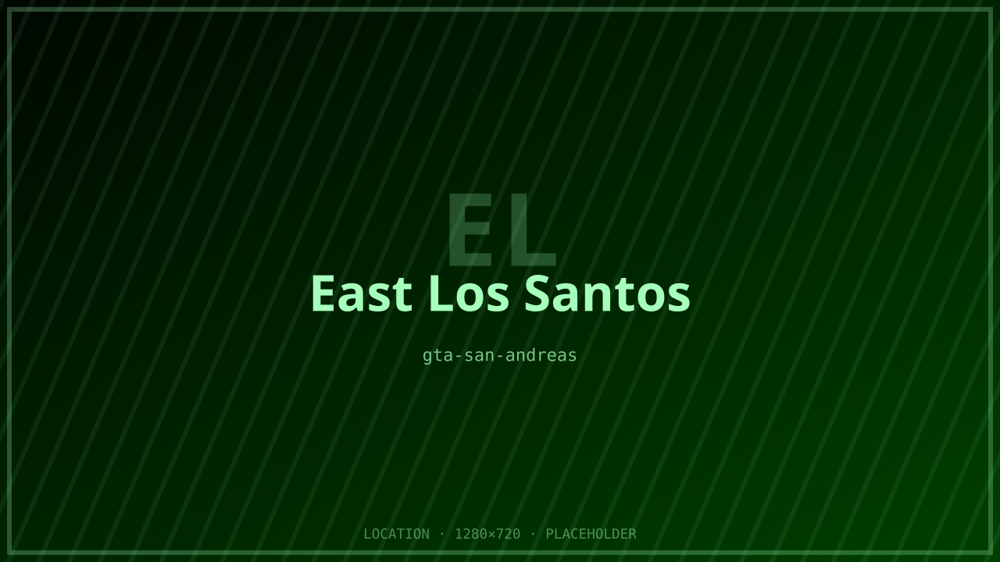
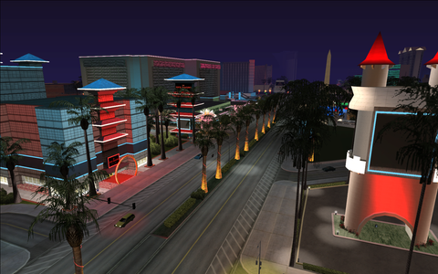
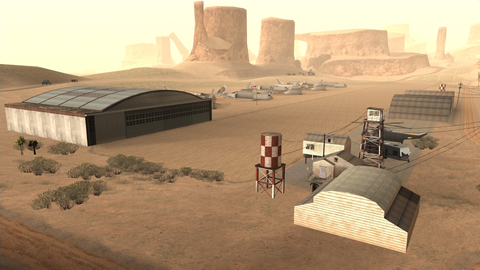
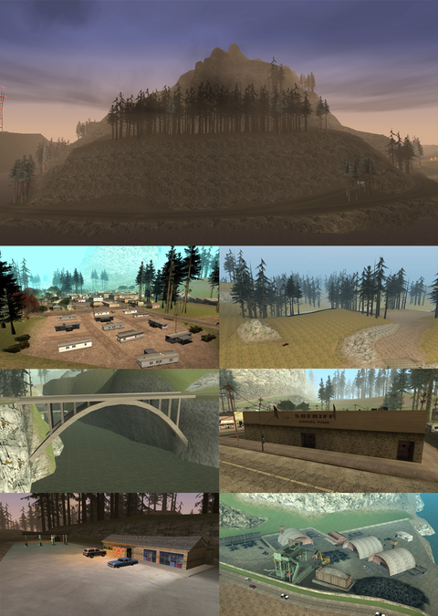

San Andreas · 22 records · coverage: partial
Locations — Grand Theft Auto: San Andreas
Cities, districts and landmarks, with parent areas.
Download locations.json Whole game bundle
| Image | Location | Type | Parent area |
|---|---|---|---|
 | Area 69 | Landmark | San Andreas |
 | Bone County | Region | San Andreas |
 | Caligula's Palace | Landmark | Las Venturas |
 | Chinatown | Neighbourhood | San Fierro |
 | Doherty | Neighbourhood | San Fierro |
 | East Los Santos | District | Los Santos |
 | Easter Basin | District | San Fierro |
 | Ganton | Neighbourhood | Los Santos |
 | Glen Park | Neighbourhood | Los Santos |
 | Idlewood | Neighbourhood | Los Santos |
 | Jefferson | Neighbourhood | Los Santos |
 | Las Venturas | City | San Andreas |
| Los Santos | City | San Andreas | |
 | Los Santos International Airport | Landmark | Los Santos |
 | Mount Chiliad | Landmark | San Andreas |
 | Mulholland | Neighbourhood | Los Santos |
 | Pier 69 | Landmark | San Fierro |
 | San Andreas | Region | — |
 | San Fierro | City | San Andreas |
 | The Strip | District | Las Venturas |
 | Verdant Meadows | Landmark | San Andreas |
 | Whetstone | Region | San Andreas |
Field definitions
| Field | Type | Required | Notes |
|---|---|---|---|
name | string | yes | |
type | string | yes | one of: City, Borough, District, Neighbourhood, Town, Landmark, Interior, Island, Region, State |
parent | string | null | no | |
summary | string | no | |
image | string | null | no | |
verified | boolean | yes | |
source | string | no |